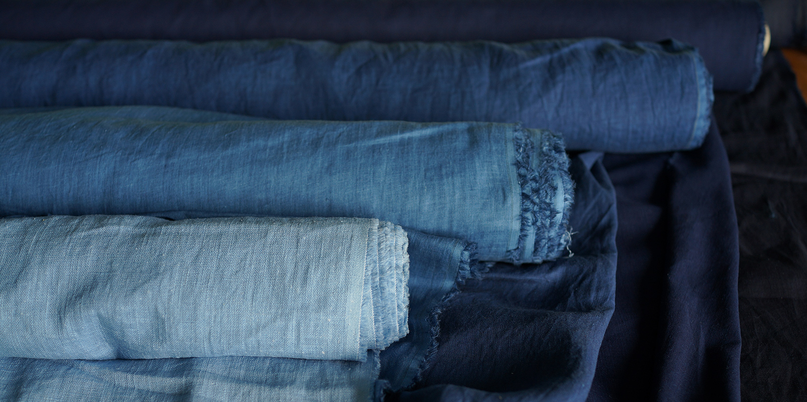

青出於染
購物問題?
例:如何下單/運費如何計算/退換貨政策是什麼/支援的付款方式有哪些/訂單如何追蹤/有免費送貨的選項嗎/商品缺貨時會通知我嗎/是否提供國際運送/如何取消訂單
更多資訊請點擊
Design by JeremyD
關於我們 | 青出於染
青出於染是一家以藍染技術為核心的企業，致力於生產高品質的藍染產品。憑藉對傳統染色技術的深厚研究和不斷創新，已成為該領域的領先者之一。
我們的藍染產品範疇廣泛，包括入場生活用品、家居用品以及3C周邊商品等。藍染公司以環保和可持續發展為公司價值的基石，使用優質的天然染料，減少對環境的不良影響。
在生產過程中，我們注重技術創新和品質管理，確保產品在保持獨特藍染風格的同時，符合國際標準。公司的設計團隊致力於將傳統藍染工藝與現代風格相結合，推動藍染產品在國際市場上的影響力。
青出於染堅信藍染不僅是一種技術，更是一種藝術，我們將繼續努力，為客戶提供獨特、優雅且具有文化價值的藍染產品。
產品介紹

在這個充滿喧囂的都市中，讓生活繽紛的藍調為你的日常添上一抹靈動色彩。歡迎來到我們的網站，專營各式藍染產品，從椅墊到相機背帶，從便利貼到飲料提袋，每一款商品都散發著獨特的魅力，讓你的生活更加精彩。
🌟藍染椅墊 - 舒適與美感的完美結合
讓你的居家空間瞬間升華，我們的藍染椅墊結合了優質材料與藝術設計，不僅提供舒適的坐感，更能為家居增色不少。無論是客廳、書房還是工作區，這些椅墊都將成為你家中的亮點。
📸藍染相機背帶 - 捕捉美好瞬間的時尚利器
攜帶著我們特製的藍染相機背帶，你的攝影之旅將更加風格獨特。高品質的材質確保舒適感的同時，時尚的設計則使你在人群中脫穎而出，成為焦點。
📝藍染便利貼 - 生活中的小巧美好
一小張的便利貼，蘊含了許多生活的小確幸。我們的藍染便利貼不僅能幫你隨手記錄重要事項，更將美麗藍調融入你的辦公空間，讓每一刻都充滿藝術氛圍。
🥤藍染飲料提袋 - 環保時尚的日常必備
擁抱環保潮流，我們的藍染飲料提袋是你環保生活的好夥伴。不僅輕巧易攜，更能展現你對於藝術和環保的獨特品味。
讓我們的藍染產品成為你生活的一部分，帶給你每天都不同的驚喜與愉悅。品味藍調，享受生活的藝術之美！開啟屬於你的藍調時光。
➤想知道更多新產品資訊嗎?點擊我們的網路商城吧!➚